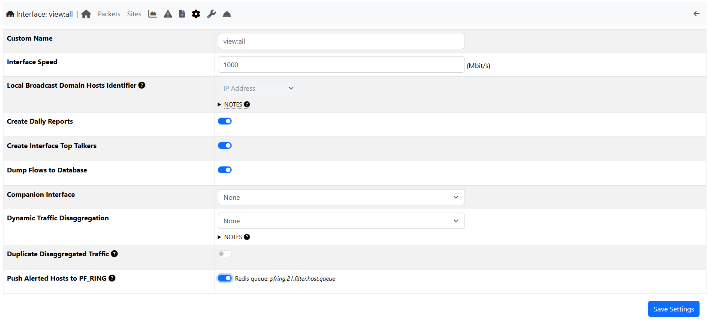

2. IDS-ускорение
Системы IDS/IPS, такие как Suricata и Zeek, хорошо известны как связанные с CPU и требуют немало ресурсов для сопоставления сигнатур и другого типа анализа.
PF_RING рамки может использоваться для ускорения захвата пакетов и предоставления большего количества CPU циклов к этим инструментам, как описано в Интеграция IDS/IPS раздел PF_RING документация. Его также можно использовать для уменьшения входных данных путем (статического) определения фильтрации. политики от уровня 2 до Layer 7 значительно улучшают производительность инструментов, как описано в PF_RING ускорение FT раздел.
ntopng предоставляет дополнительный метод ускорения систем IDS/IPS, чья идея схожа с Интеллектуальное ускорение записи используется n2disk. Фактически ntopng реализует поведенческие проверки для обнаружения неправильного поведения хоста. и может быть настроен для передачи информации об этих хостах во внешние инструменты для дальнейший анализ их трафика. Это можно настроить из Интерфейс > Подробности > Настройки меню, где можно переключить Переместите оповещенные хосты на PF_RING флаг.

Переместите оповещенные хосты на PF_RING
Если этот параметр включен, ntopng уведомляет хосты, для которых есть помолвлен оповещение на PF_RING, вызывающее перенаправление трафика, соответствующего этим хостам к IDS/IPS (или любому другому приложению, работающему поверх PF_RING), что в противном случае отбрасывается по умолчанию.
IP-адреса, подлежащие мониторингу, уведомляются PF_RING посредством очереди Redis, имя которого — pfring.*INTERFACE_ID*.filter.host.queue, как сообщает GUI. Пожалуйста, также прочтите PF_RING Фильтрация во время выполнения раздел для настройки IDS/IPS.